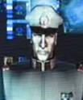
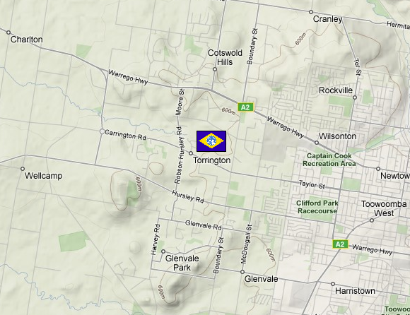

Torrington Torrington
Southern Australia Fortress Hawking The ass end of the Federation, Torrington is something of an oddball, controlling the least important area of Federation power, but its most important item of power, the entirety of the EF's nuclear arsenal. The nuclear weapons bunker is locked in a nearly indestructable safehouse, only openable by retina scans from two high ranking officers. The base is not far from the crater left by Island Iffish when it crashed into Sydney early in the war, but the base itself is landlocked, and in the middle of a dry Australian wasteland.  Hawking Commander Hawking is a rough and serious man, taking his position in Australia as as important as anyone tasked with controlling the front lines. Indeed, his position is one of the most important, being tasked with safeguarding the Federations nuclear arsenal. He is an excellent commander, and a friend to each and every one of his pilots. The White Dingos Although they have only recently been given captured Zakus, the White Dingos have already made names for themselves as one of the Federations best mobile suit teams. Even though they are always low on supplies and never using new technology, the Dingos have recorded kill after kill, having more mobile suits down on their watch than many teams on the front lines. They are expert pilots, and use teamwork effectively in battle to bring down the enemy. Torrington  |